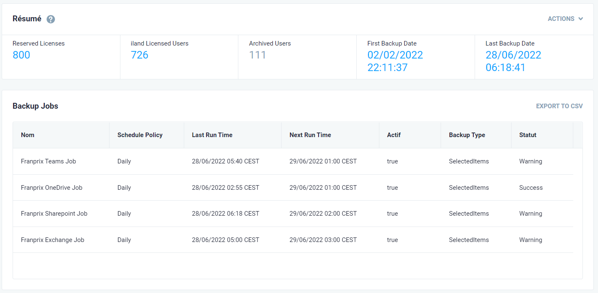

Stage n°1

Mon premier stage s'est déroulé dans la société Komposite situé à Levallois
Pour commencer, Komposite est une entreprise spécialisée dans le secteur d'activité du commerce de gros ordinateurs, d'équipements informatiques périphériques et de logiciels. Le nombre de salariés est estimé entre 20 et 49 personnes. Son chiffre d'affaires en 2021 était de 21 784 300 €.
Mon premier stage durait 7 semaines dans lesquelles je devais réaliser une tache. Mon projet à effectuer était de faire une page qui allait recenser certaines informations sur un client. Le client sur lequel je devais recueillir des informations était Franprix. Pour récupérer ces informations, je devais utiliser des API sur le site iland car c'est iland qui s'occupait de toutes ces informations. Cette page devait recenser un historique des demandes du client et leur état, si elles sont terminées ou non.
Cette image est un exemple de ce à quoi devait ressembler la page à créer. Cette page devait se mettre à jour et avait pour but de faciliter l'accès à l'information pour les employés.
Le projet n'a pas pu être finalisé, car je ne connaissais pas du tout les API et donc je me suis documenté, mais cela m'a pris beaucoup de temps. Cependant, cela n'aura pas été inutile, car j'ai appris beaucoup choses sur le domaine. J'ai suivi quelque cours sur OpenClassroom qui m'ont permis de m'améliorer dans la programmation orientée objet et à comprendre ce qu'était une API et à quoi elles servaient.
En résumé, Ce premier stage aura été un peu décevant pour moi, car le projet n'a pas été terminé, mais je suis tout de même satisfait du fait que je suis ressorti de mon stage en ayant appris des choses intéressantes